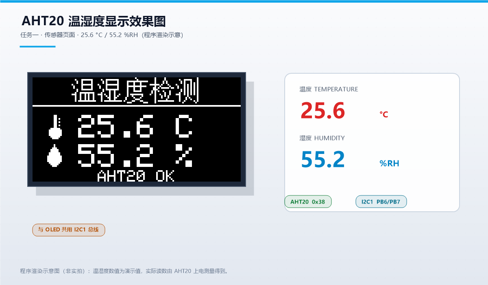
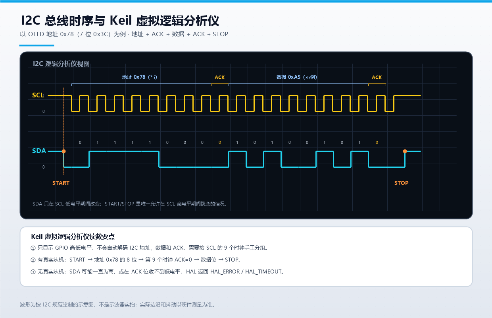

STM32F103C8T6 · SSD1306 OLED · AHT20 · U8g2
| 项目 | 内容 |
|---|---|
| 课程 | 嵌入式系统原理与应用 |
| 姓名 | 徐正心 |
| 学号 | 632407030612 |
| 班级 | 通信 2403（EIE 2403） |
| 实验室 | 重庆交通大学物联网 205 实训室 |
| 实验日期 | 2026 年 10 月 |
| 主控芯片 | STM32F103C8T6 |
| 显示模块 | 0.96 英寸 SSD1306 OLED（128×64，I2C） |
| 传感器 | AHT20 温湿度传感器（I2C） |
本实验以 STM32F103C8T6 最小系统板为核心，在同一套 STM32F1xx HAL 工程中完成两个任务。任务一从零实现 SSD1306 OLED 的 I2C 驱动，建立 1 KB 显存，支持像素、直线、矩形、圆、5×7 ASCII、16×16 汉字和位图绘制；在此基础上显示学生信息、读取 AHT20 温湿度，并分别用软件滚动和 SSD1306 硬件滚动实现长文本与静态图案的滚动显示。任务三使用 CubeMX 风格的 HAL 工程，将 U8g2 裁剪并移植到 STM32F103 与 SSD1306 平台，完成 U8g2 图形/字体 demo、学号姓名页、四向滚动页和双帧动画头像页。两个工程均使用 Keil MDK 5 + ARMCC 5.06 编译，结果均为 0 error / 0 warning。报告最后结合 I2C 时序图，回答 Keil 虚拟逻辑分析仪中 SDA 波形的表现，并给出无法真实抓取 I2C 信号时的替代方案。
关键词：STM32F103C8T6；SSD1306；AHT20；U8g2；I2C；OLED
| 器件 | 型号/参数 | 作用 |
|---|---|---|
| 主控板 | STM32F103C8T6 最小系统板 | 72 MHz Cortex-M3，64 KB Flash，20 KB RAM |
| 显示屏 | 0.96 英寸 SSD1306，128×64，I2C | 显示文字、图形和动画 |
| 传感器 | AHT20，I2C 地址 0x38 | 采集温度和相对湿度 |
| 调试器 | ST-Link V2 | 下载与在线调试 |
| 串口工具 | USB-TTL + 串口助手 | 查看调试输出，115200-8-N-1 |
| 按键 | PA0 外接按键 | 手动切换页面 |
| LED | PC13 板载 LED | 500 ms 心跳指示 |
| 软件 | 版本/说明 |
|---|---|
| Keil MDK | 5.x，ARMCC 5.06 |
| STM32CubeMX | 用于生成参考初始化代码（OLED_AHT20.ioc） |
| STM32F1xx HAL | ST 官方 HAL 库 |
| U8g2 | 裁剪版，保留 SSD1306 128×64 I2C 全缓冲驱动 |
| 串口助手 | 115200-8-N-1，用于查看运行日志 |
| 字库脚本 | PowerShell + GDI+，生成 16×16 汉字和 5×7 ASCII |
| 信号 | STM32F103C8T6 | OLED | AHT20 | 说明 |
|---|---|---|---|---|
| 电源 | 3.3 V | VCC | VCC | 严禁接 5 V |
| 地 | GND | GND | GND | 必须共地 |
| 时钟 | PB6 | SCL | SCL | I2C1_SCL，400 kHz |
| 数据 | PB7 | SDA | SDA | I2C1_SDA，400 kHz |
| 串口发送 | PA9 | — | — | USART1_TX，接 USB-TTL 的 RX |
| 串口接收 | PA10 | — | — | USART1_RX，接 USB-TTL 的 TX |
| 按键 | PA0 | — | — | 内部上拉，按下接地 |
| LED | PC13 | — | — | 低电平点亮 |
OLED 的 7 位地址为 0x3C，HAL 使用 8 位写地址 0x78；AHT20 的 7 位地址为 0x38，8 位写地址为 0x70。两个器件挂在同一条 I2C1 总线上，靠地址区分。
系统按“硬件层—驱动层—应用层”划分：
+--------------------------------------------------+
| 应用层 |
| Task1: 信息页 / 温湿度页 / 软件滚动 / 硬件滚动 |
| Task3: U8g2 demo / 信息页 / 四向滚动 / 头像 / 温湿度 |
+--------------------------------------------------+
| 驱动层 |
| oled_ssd1306.c font_cn.c font5x7.c |
| aht20.c avatar.c u8g2 (裁剪版) |
+--------------------------------------------------+
| 硬件抽象层 |
| STM32F1xx HAL: GPIO / I2C1 / USART1 / TIM(base) |
+--------------------------------------------------+
| 硬件层 |
| STM32F103C8T6 + SSD1306 OLED + AHT20 + 按键/LED |
+--------------------------------------------------+
任务一和任务三共用同一套 HAL、CMSIS、启动文件和板级代码，但应用入口不同。最初尝试在同一个 Keil 工程中建立两个 Target，但 uVision 在 Build 时会把两个 Target 的源文件合并到同一次编译中，导致 task1_app.c 和 task3_app.c 同时被编译，既浪费空间又容易产生重复符号。最终改为两个独立的单目标工程：
| 工程 | 预处理宏 | 应用文件 | 输出目录 |
|---|---|---|---|
Task1_SSD1306.uvprojx |
USE_HAL_DRIVER, STM32F103xB |
task1_app.c |
Objects_Task1/ |
Task3_U8g2.uvprojx |
USE_HAL_DRIVER, STM32F103xB, TASK3_BUILD |
task3_app.c |
Objects_Task3/ |
main.c 通过 #if defined(TASK3_BUILD) 选择调用 Task3_Run() 或 Task1_Run()，两个工程各自只编译自己的应用文件，互不干扰。
HAL_GetTick()。SSD1306 的 128×64 显存按 8 页组织，每页 8 行像素，每列 1 字节，字节的 bit0 对应页内最上面的像素。驱动定义：
#define OLED_WIDTH 128U
#define OLED_HEIGHT 64U
#define OLED_PAGES 8U
#define OLED_BUF_SIZE (OLED_WIDTH * OLED_PAGES) /* 1024 字节 */
static uint8_t s_gram[OLED_BUF_SIZE];
所有绘图函数先写 s_gram，最后调用 OLED_Display() 一次性刷新。刷新时先发送页地址和列地址，再连续写入 128 字节，避免每个像素都发起一次 I2C 传输。
像素写入的核心是：
s_gram[(y >> 3) * OLED_WIDTH + x] |= (uint8_t)(1U << (y & 7));
y >> 3 得到页号，y & 7 得到页内行号。清除像素时对该位取反即可。直线、矩形、圆、位图都建立在这一函数之上。
OLED_Init() 先调用 HAL_I2C_IsDeviceReady() 探测 0x78，确认器件存在后发送初始化命令：
| 命令 | 作用 |
|---|---|
0xAE |
关闭显示 |
0xD5 0x80 |
设置时钟分频 |
0xA8 0x3F |
设置复用率为 1/64 |
0xD3 0x00 |
显示偏移为 0 |
0x40 |
起始行为 0 |
0x8D 0x14 |
开启电荷泵 |
0x20 0x00 |
水平寻址模式 |
0xA1 |
段重映射，左右方向正确 |
0xC8 |
COM 扫描方向，上下方向正确 |
0xDA 0x12 |
COM 引脚配置 |
0x81 0xCF |
对比度 |
0xD9 0xF1 |
预充电周期 |
0xDB 0x40 |
VCOMH 电压 |
0xA4 |
显示显存内容 |
0xA6 |
正常显示（非反色） |
0x2E |
停止滚动 |
0xAF |
开启显示 |
写命令时先发控制字节 0x00，再发命令；写数据时先发 0x40。这是 SSD1306 I2C 协议的关键区别。
汉字点阵使用 Windows 宋体 16 px 通过 GDI+ 渲染生成。每个汉字 16×16 像素，按行优先、每行 2 字节、MSB 在左存储，共 32 字节。字库以“Unicode 码点 → 点阵指针”的方式组织，FontCN_Get() 负责查找。
界面文字不直接写中文字符串，而是写成 uint16_t 码点数组，例如：
static const uint16_t TXT_NAME[] =
{
0x5F90, 0x6B63, 0x5FC3, 0 /* 徐正心 */
};
这样做的好处是：无论 Keil 编辑器把源文件保存成 GB2312 还是 UTF-8，编译器看到的都是明确的 16 位码点，不会出现“中文变乱码”或“一个汉字被拆成多个字节”的问题。
ASCII 使用 Adafruit GFX 兼容的 5×7 字库。在 16 px 行内绘制时，把 5×7 字形放在第 5~11 行，与 16×16 汉字垂直居中对齐，因此中英文混排时视觉基线一致。
AHT20 的测量流程如下：
0xBE 0x08 0x00，等待 10 ms。0xAC 0x33 0x00，等待 80 ms。数据换算：
raw_h = ((buf[1] << 16) | (buf[2] << 8) | buf[3]) >> 4
H = raw_h * 100 / 2^20
raw_t = ((buf[3] & 0x0F) << 16) | (buf[4] << 8) | buf[5]
T = raw_t * 200 / 2^20 - 50
CRC8 使用多项式 0x31、初值 0xFF，对前 6 字节计算并与第 7 字节比较。考虑到不同批次模块的 CRC 实现可能存在差异，程序在 CRC 失败时只累计错误计数，仍然使用本次数据；如果通信本身失败，则显示 AHT20 ERR。
任务一共四个页面，按 6 s、6 s、12 s、8 s 自动轮播，按 PA0 可立即切换：
AHT20 OK 或 AHT20 ERR，每 500 ms 更新一次。Hello，欢迎来到重庆交通大学物联网205实训室！，从右向左循环。HARDWARE SCROLL，页 1~6 为静态字符图案，页 7 固定底部说明；前 4 秒水平左滚，后 4 秒切换为左 + 垂直对角线滚动。软件滚动的本质是“每帧改变绘制起点 x，然后整屏重绘”。文本宽度由 OLED_TextWidthU16() 计算：ASCII 占 6 px，汉字占 16 px。本项目长文本共 336 px，屏幕宽 128 px，总行程为 464 px。
uint32_t pos = (elapsed * 55U) / 1000U; /* 55 像素/秒 */
int16_t x = (int16_t)((int32_t)OLED_WIDTH - (int32_t)pos);
OLED_DrawTextU16(x, 24, TXT_LONG_SCROLL, OLED_TEXT_MIXED16, 1);
驱动在 OLED_DrawPixel() 中自动裁剪超出屏幕的像素，因此不需要额外计算可见区间。每帧间隔 25 ms，实际刷新率约 40 帧/秒，滚动比较平滑。
SSD1306 内部有滚动引擎，写入命令后由芯片自动移动显示内容，MCU 不需要反复重绘。相关命令：
| 命令 | 含义 |
|---|---|
0x26 |
水平向右滚动 |
0x27 |
水平向左滚动 |
0x29 |
垂直 + 向右滚动 |
0x2A |
垂直 + 向左滚动 |
0x2F |
启动滚动 |
0x2E |
停止滚动 |
滚动参数包括：虚拟页数（通常 0）、起始页、滚动间隔、结束页、垂直偏移。本项目设置页 1~6 参与滚动，页 0 和页 7 固定，因此标题和底部说明保持不动；interval=0 表示最快滚动速度。
硬件滚动的限制是：它只能滚动显存中已有的静态内容，不能直接滚动任意长度的新文本。因此长文本页采用软件滚动，硬件滚动页只用于演示静态图案的水平和对角线移动。

图 4-1 由 tools/gen_report_images.ps1 按程序实际使用的字库、图标和坐标渲染，用于说明页面布局。该图不是硬件实拍，实际 OLED 为单色发光，亮度和对比度以实物为准；真实硬件照片由作者在实验台上补拍。
OLED_AHT20.ioc 保存了参考配置：HSE 8 MHz、PLL ×9、72 MHz 主频、I2C1 400 kHz、USART1 115200、PC13 输出、PA0 上拉输入。实际工程直接使用 CubeMX 生成的 HAL 初始化风格代码，但应用层代码是手工编写的，避免每次 Generate Code 覆盖业务逻辑。
完整 U8g2 包含大量显示驱动和数百种字体，直接加入 Keil 工程会显著增加编译时间和 Flash 占用。本项目只保留实际使用的模块：
| 类别 | 保留文件 |
|---|---|
| 公共头文件 | u8g2.h、u8x8.h |
| U8g2 核心 | u8g2_setup.c、u8g2_buffer.c、u8g2_hvline.c、u8g2_ll_hvline.c、u8g2_intersection.c |
| 图形函数 | u8g2_box.c、u8g2_line.c、u8g2_circle.c、u8g2_arc.c、u8g2_polygon.c |
| 位图/字体 | u8g2_bitmap.c、u8g2_font.c、u8g2_kerning.c、u8g2_cleardisplay.c |
| 显示设备 | u8g2_d_setup_min.c、u8g2_d_memory_min.c、u8x8_d_ssd1306_128x64_noname.c |
| 底层通信 | u8x8_setup.c、u8x8_byte.c、u8x8_cad.c、u8x8_display.c、u8x8_gpio.c、u8x8_capture.c |
| 字符串工具 | u8x8_string.c、u8x8_u8toa.c、u8x8_u16toa.c、u8x8_8x8.c |
| 字体数据 | u8g2_fonts_min.c（5×7、6×10、6×12、7×14B、ncenB10、ncenB14） |
裁剪原则：
u8g2_Setup_ssd1306_i2c_128x64_noname_f，删除 1/2 页缓冲接口。mui、u8log、u8g2_message、u8g2_selection_list 等无关模块。最终保留 30 个源文件，完整清单见 Drivers/U8g2/README.md。
U8g2 通过 u8x8 的字节回调与底层通信。核心回调如下：
static uint8_t U8g2_ByteCb(u8x8_t *u8x8, uint8_t msg, uint8_t arg_int, void *arg_ptr)
{
switch (msg)
{
case U8X8_MSG_BYTE_INIT:
return 1;
case U8X8_MSG_BYTE_START_TRANSFER:
s_tx_len = 0;
return 1;
case U8X8_MSG_BYTE_SEND:
/* 把 arg_int 个字节追加到 s_tx_buf */
return 1;
case U8X8_MSG_BYTE_END_TRANSFER:
HAL_I2C_Master_Transmit(&hi2c1, OLED_I2C_ADDR, s_tx_buf, s_tx_len, 100);
return 1;
default:
return 0;
}
}
显示初始化：
u8g2_Setup_ssd1306_i2c_128x64_noname_f(&s_u8g2, U8G2_R0,
U8g2_ByteCb, U8g2_GpioDelayCb);
u8g2_InitDisplay(&s_u8g2);
u8g2_SetPowerSave(&s_u8g2, 0);
全缓冲模式下，U8g2 在 RAM 中维护 1 KB 缓冲区，u8g2_SendBuffer() 时把整屏数据交给回调，再由 HAL 一次发送。这样比逐像素发送快得多，也能保证画面不闪烁。
demo 页展示 U8g2 的常用绘图和字体能力：
U8g2 Demo 使用 7×14 粗体；ncenB14 显示 U8g2，用 5×7 显示 STM32F103、SSD1306；128x64。该页用于验证 U8g2 的图形函数、字体渲染、缓冲区刷新和 I2C 回调都工作正常。
标题 U8g2 PORT 用 7×14 粗体居中，下面依次是：
632407030612（6×12 字体，x=28，y=45）；由于 U8g2 本身不带中文字库，汉字通过 u8g2_DrawXBMP() 绘制，ASCII 则由 U8g2 字体绘制。两者混排时统一按 16 px 行高计算宽度：ASCII 6 px，汉字 16 px。
四向滚动页用 12 秒循环四个方向，每个方向 3 秒：
| 阶段 | 方向 | 实现 |
|---|---|---|
| 0 | 右 → 左 | 文本起点 x = 128 - 70t，水平移动 |
| 1 | 左 → 右 | 文本起点 x = -text_w + 70t，水平移动 |
| 2 | 下 → 上 | 六个汉字竖向排列，整体 y = 64 - 60t |
| 3 | 上 → 下 | 六个汉字竖向排列，整体 y = -108 + 60t |
水平速度为 70 px/s，垂直速度为 60 px/s。滚动区域用 u8g2_SetClipWindow(&s_u8g2, 0, 11, 128, 55) 限制在 y=11~54，标题（y=10 以上）和底部方向标签（y=62）不会被滚动文字覆盖。
由于 U8g2 的 DrawXBMP 不会自动处理负坐标，代码实现了 T3_DrawCellClip()：当字符部分移出视口时，先复制点阵、按 skip_x/skip_y 平移，再只绘制可见部分。这样竖向滚动时不会出现花屏或越界。
头像为 56×56 像素、两帧 XBMP 点阵，位于屏幕左侧 (2, 7)；右侧显示“头像”“徐正心”“通信2403”，顶部显示学号。
动画节奏：
头像点阵由 tools/gen_avatar.ps1 生成，采用与 U8g2 XBMP 一致的行优先、MSB 在左格式。温度计和水滴图标也由同一脚本手工构造，保证 16×16 下轮廓清晰。
任务三的温湿度页与任务一共用 aht20.c，但显示改用 U8g2：
u8g2_DrawXBMP()；AHT20 OK / AHT20 ERR 用 5×7 居中；T=xx.x C H=xx.x %。Keil uVision 的 Logic Analyzer（View → Analysis Windows → Logic Analyzer）用于观察仿真环境中变量或引脚的电平变化。它可以显示数字信号的 0/1 波形、测量脉宽和周期，但它不是协议分析仪：
因此，虚拟逻辑分析仪适合验证“MCU 是否在正确的时间输出正确的电平”，不适合单独证明“从机已经正确响应”。
以 OLED 写地址 0x78 为例，一次“地址 + 数据 + 停止”的完整时序如下：
0111 1000。每个 bit 在 SCL 低电平期间改变，在 SCL 高电平期间被采样。1010 0101，同样是 MSB 在前。
图 6-1 为按 I2C 规范绘制的示意图，包含 START、地址 0x78、ACK、数据 0xA5、ACK 和 STOP。实际波形会有上升沿、下降沿和抖动，边沿时间由总线上拉电阻和电容决定，不能像示意图这样垂直。
这是本实验最容易被问到的现象。需要分两种情况：
情况一：纯 Keil 软件仿真，总线上没有从机模型。
HAL_ERROR 或 HAL_TIMEOUT，I2C 状态机可能停在 BUSY；情况二：真实硬件，但从机未接、地址错误或从机损坏。
所以，SDA 不会自动显示“温度数据”。它显示的是 MCU 试图发送的电平序列；只有从机正确响应，ACK 位才会出现低电平，后续数据才有意义。
Debug 模式（Use Simulator）。View → Analysis Windows → Logic Analyzer。Setup，添加要观察的信号。可以添加外设寄存器对应的 SCL/SDA 引脚，也可以添加全局变量。Bit，颜色任意。HAL_I2C_Master_Transmit() 前后。Zoom 调整时间轴。如果使用软件模拟 I2C（GPIO 翻转），虚拟逻辑分析仪能更直观地看到 SDA/SCL 的每一位，因为每条 HAL_GPIO_WritePin() 都对应一个明确的引脚动作。硬件 I2C 外设的引脚动作由外设自动产生，仿真模型的支持程度取决于器件模型。
| 方案 | 做法 | 优点 | 局限 |
|---|---|---|---|
| USB 逻辑分析仪 | 使用 24 MHz 8 通道逻辑分析仪，接 GND/SCL/SDA，用 PulseView 或 sigrok 的 I2C 解码器 | 便宜、直观、能自动解码地址/数据/ACK | 需要额外硬件 |
| 示波器解码 | 用双通道示波器接 SCL/SDA，开启 I2C 触发和解码 | 可同时看模拟波形质量、上升沿 | 示波器价格较高 |
| 第二块 MCU 嗅探 | 用 STM32/Arduino/ESP32 作为 I2C 从机或 GPIO 采样器，把总线数据转发到串口 | 成本低，可编程定制 | 需要额外开发 |
| 固件日志 | 打印 HAL_I2C_GetState()、HAL_I2C_GetError()、SR1/SR2 寄存器、HAL 返回值 |
不需要额外硬件 | 只能看结果，看不到波形 |
| 总线扫描 | 用 HAL_I2C_IsDeviceReady() 遍历 0x08~0x77，确认器件地址 |
快速定位地址错误 | 不能分析时序 |
| 显示自检 | 让 OLED 显示棋盘格、全亮、全灭、边框等测试图案 | 验证写路径和显存 | 不能验证读操作 |
| 降速排查 | 把 I2C 从 400 kHz 降到 100 kHz，缩短杜邦线，增加上拉 | 解决大部分接触/电容问题 | 不定位协议错误 |
| 替换法 | 换一个已知良好的 OLED/AHT20 模块，或换一组杜邦线 | 快速判断硬件损坏 | 需要备件 |
| 仿真模型 | 在 Proteus 等环境中加入 I2C 从机模型，观察虚拟总线 | 无需硬件 | 模型与实际器件可能有差异 |
本项目的实际排查顺序是：
HAL_I2C_IsDeviceReady() 确认 0x78 和 0x70 是否有应答；Keil 虚拟逻辑分析仪中的 SDA 显示的是数字电平随时间变化的波形，不是自动解码后的 I2C 数据包。正常有从机时应看到“空闲高 → START 下降沿 → 8 位地址 → ACK 低 → 8 位数据 → ACK 低 → STOP 上升沿”；没有真实从机时，最常见的是地址后 SDA 保持高电平（NACK），随后 HAL 报错或总线挂起。要真正分析 I2C 协议，优先使用带 I2C 解码的 USB 逻辑分析仪或示波器；没有仪器时，可以用 HAL 返回值、状态寄存器、串口日志和总线扫描做软件层面的替代诊断。
两个工程均使用 Keil MDK 5 + ARMCC 5.06 编译，结果如下：
| 工程 | Code | RO-data | RW-data | ZI-data | Flash 估算 | RAM 估算 | 结果 |
|---|---|---|---|---|---|---|---|
Task1_SSD1306 |
14168 | 3748 | 28 | 2340 | 17.5 KB | 2.3 KB | 0 error / 0 warning |
Task3_U8g2 |
19200 | 9828 | 32 | 2896 | 28.4 KB | 2.9 KB | 0 error / 0 warning |
说明：
Task1_SSD1306.hex 约 50 KB（文本格式），Task3_U8g2.hex 约 82 KB（文本格式）。现象：直接在源码中写中文字符串，Keil 编译后显示为乱码或问号。
原因：Keil 默认使用本地编码（GB2312/GBK），而编辑器可能以 UTF-8 保存；不同编码下同一个汉字的字节序列不同。
解决：界面文字统一用 uint16_t Unicode 码点数组表示；字库用码点查找，不依赖源文件编码。生成字库时只收录实际用到的 69 个汉字，未收录字符显示方框，便于发现缺字。
现象：在同一个工程中建立 Task1、Task3 两个 Target，Build 时两个应用文件都被编译，Flash 占用异常增大。
原因：uVision 的 Build 会把当前 Target 的源文件组全部编译，两个 Target 共用同一个源文件组时无法自动排除对方的应用文件。
解决：改为两个独立的单目标工程，各自只包含自己的应用文件；共用驱动和 HAL 源码，通过 TASK3_BUILD 宏区分入口。
现象：调用 u8g2_DrawCircle() 时编译报参数数量错误。
原因：U8g2 的圆函数需要额外的 U8G2_DRAW_ALL 选项参数，不能只传圆心和半径。
解决：改为 u8g2_DrawCircle(&s_u8g2, cx, cy, 16, U8G2_DRAW_ALL)；u8g2_DrawDisc() 同理。
现象：竖向滚动时文字进入标题和底部方向标签区域，画面重叠。
原因：U8g2 的裁剪窗口初始为全屏，文字绘制没有限制在内容区。
解决：使用 u8g2_SetClipWindow(&s_u8g2, 0, 11, 128, 55) 把滚动内容限制在 y=11~54，绘制完再调用 u8g2_SetMaxClipWindow() 恢复全屏，底部标签单独绘制。
现象：文字从左侧或上方移出屏幕时，出现随机像素或花屏。
原因：u8g2_DrawXBMP() 的坐标参数是无符号类型，传入负值时会被解释成很大的正数。
解决：实现 T3_DrawCellClip()，先判断字符是否完全在视口外；部分可见时复制点阵并按 skip_x/skip_y 平移，只绘制可见部分。
现象：个别 AHT20 模块的 CRC 字节与计算值不一致，但温湿度数据看起来正常。
原因：不同批次模块的 CRC 实现或出厂校准数据存在差异。
解决：CRC 失败时只累计错误计数，不丢弃数据；通信失败（无 ACK、忙标志一直为 1）才显示错误。这样既保留了校验信息，又避免了“数据明明可用却一直报错”。
现象：尝试用 SSD1306 硬件滚动显示长文本，发现只能滚动当前显存中的内容，文本超出 128 px 的部分不会自动进入。
原因：硬件滚动只是移动显存窗口，不会改变显存内容；长文本必须先全部写入显存，而 128×64 显存放不下 336 px 的文本。
解决：长文本使用软件滚动，每帧改变绘制起点；硬件滚动只用于静态图案演示，并在报告中说明两者区别。
本实验完成了从底层驱动到应用界面的完整链路。任务一通过手写 SSD1306 驱动，深入理解了 OLED 的页显存结构、I2C 命令/数据区分、汉字点阵和滚动原理；任务三通过裁剪和移植 U8g2，掌握了第三方图形库与 HAL 的对接方法，以及全缓冲、裁剪窗口、XBMP 等技术。
在调试过程中，遇到的中文编码、双目标工程、负坐标裁剪、AHT20 CRC 等问题，都需要结合数据手册和实际现象分析，不能只依赖“能编译”判断正确性。最终两个工程均以 0 error / 0 warning 编译通过，Flash 和 RAM 占用均在 STM32F103C8T6 的容量范围内。
通过本题的 I2C 波形分析，也认识到虚拟逻辑分析仪的定位：它擅长观察电平时序，但不替代协议分析仪；真正的总线故障排查，需要结合硬件仪器、HAL 返回值、状态寄存器和软件日志，形成完整的证据链。
| 文件 | 说明 |
|---|---|
Core/Src/main.c |
时钟、I2C1、USART1、GPIO 初始化，应用分派 |
Core/Src/task1_app.c |
任务一四个页面、软件滚动、硬件滚动 |
Core/Src/task3_app.c |
U8g2 移植层、demo、信息页、四向滚动、头像、温湿度 |
Core/Src/oled_ssd1306.c |
SSD1306 显存、绘图、字库、硬件滚动 |
Core/Src/font_cn.c |
69 个 16×16 汉字点阵 |
Core/Src/font5x7.c |
95 个 5×7 ASCII 字形 |
Core/Src/avatar.c |
两帧 56×56 头像、温度计、水滴图标 |
Core/Src/aht20.c |
AHT20 初始化、测量、CRC8 |
Core/Src/board.c |
LED 心跳、按键消抖、串口打印 |
Drivers/U8g2/ |
裁剪版 U8g2（30 个源文件） |
MDK-ARM/Task1_SSD1306.uvprojx |
任务一 Keil 工程 |
MDK-ARM/Task3_U8g2.uvprojx |
任务三 Keil 工程 |
| 参数 | 数值 |
|---|---|
| 系统时钟 | 72 MHz |
| I2C 速率 | 400 kHz |
| OLED 地址 | 7 位 0x3C / 写 0x78 |
| AHT20 地址 | 7 位 0x38 / 写 0x70 |
| 串口 | USART1，115200-8-N-1 |
| OLED 显存 | 1024 字节 |
| U8g2 缓冲区 | 1024 字节 |
| U8g2 I2C 发送缓冲 | 160 字节 |
| 汉字字库 | 69 个 16×16 字形 |
| ASCII 字库 | 95 个 5×7 字形 |
| 任务一软件滚动 | 55 px/s，25 ms/帧 |
| 任务三水平滚动 | 70 px/s |
| 任务三垂直滚动 | 60 px/s |
| 头像动画 | 56×56，2 s 周期，80 ms/帧 |